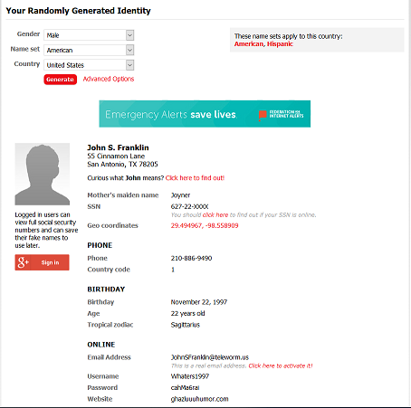
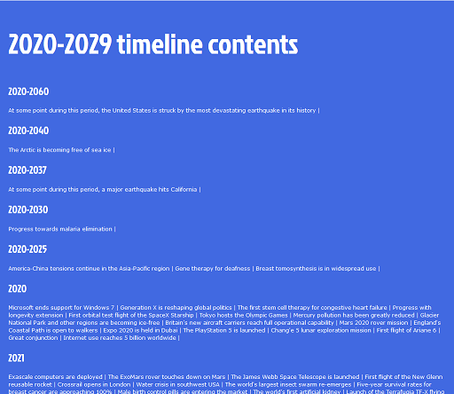

Owen's Amusements
|  |
Fakenamegenerator.comThis website will genenerate a name, based on gender, name set, and country of your choosing. It's fun to see different names that you may not have heard of, and the different data used in different countries that make up your identity. Try using this website to make you a fake identity when starting a career as a con man. |
|  |
Futuretimeline.netThis website has possible events in a timeline. You can look for certain time periods, and all listed events have articles explaining why and what might happen. They also have sources for why they believe it will happen Try looking at the 2020-2029 timeline so see what might happen in the next ten years. Hopefully, most of it will be possitive events that will become true. |
Howmanypeopleareinspacerightnow.comThis website simply lists how many people are currently in space right now, and who they are with afew details. They also have an app that you can download to more easily check. Is there more or less people in space currently than you would have guessed? |